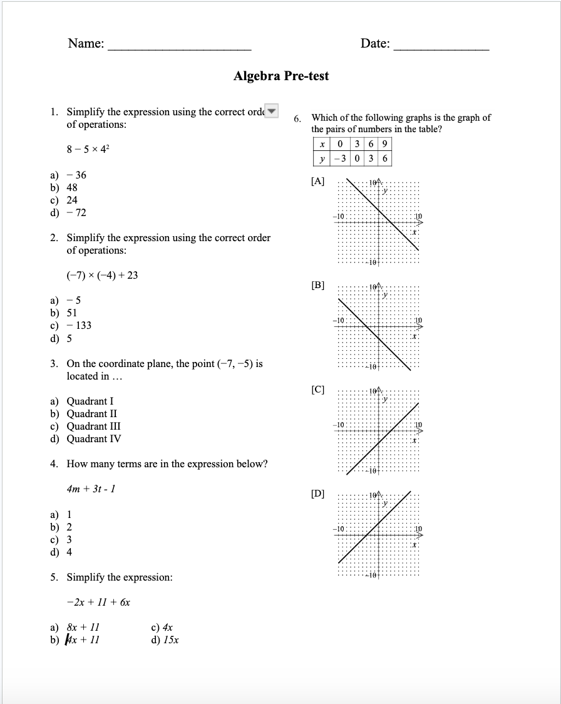
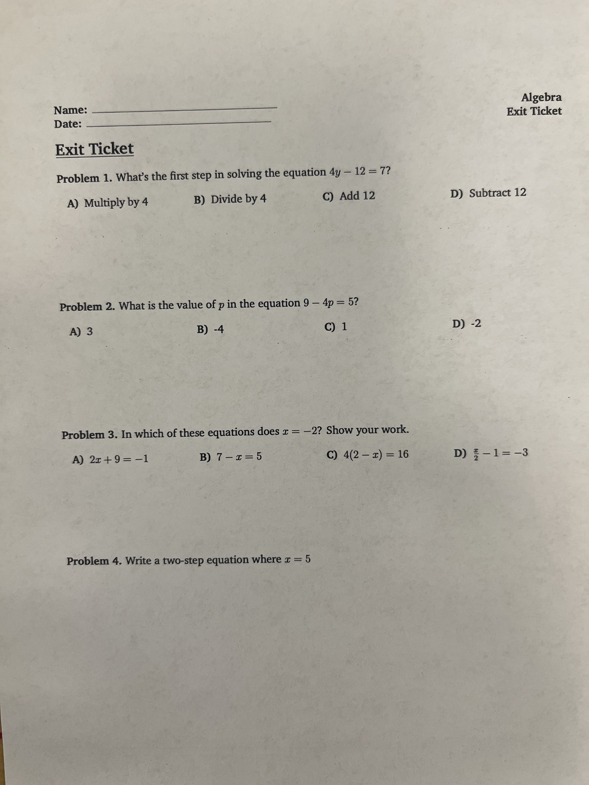
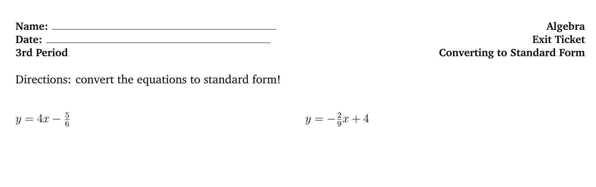
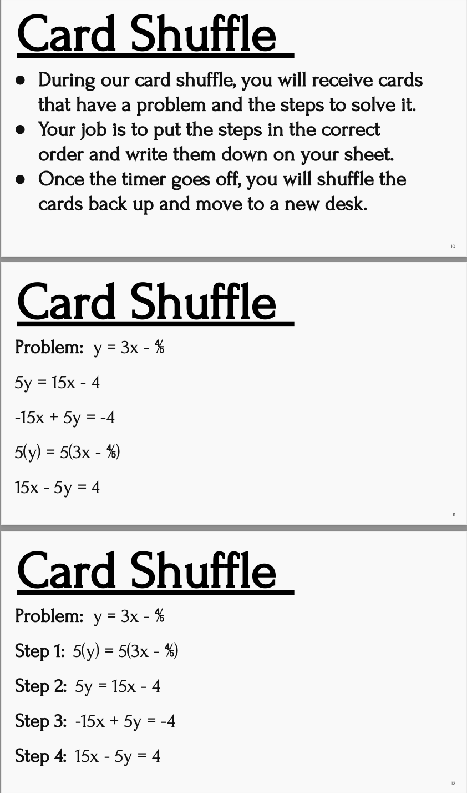
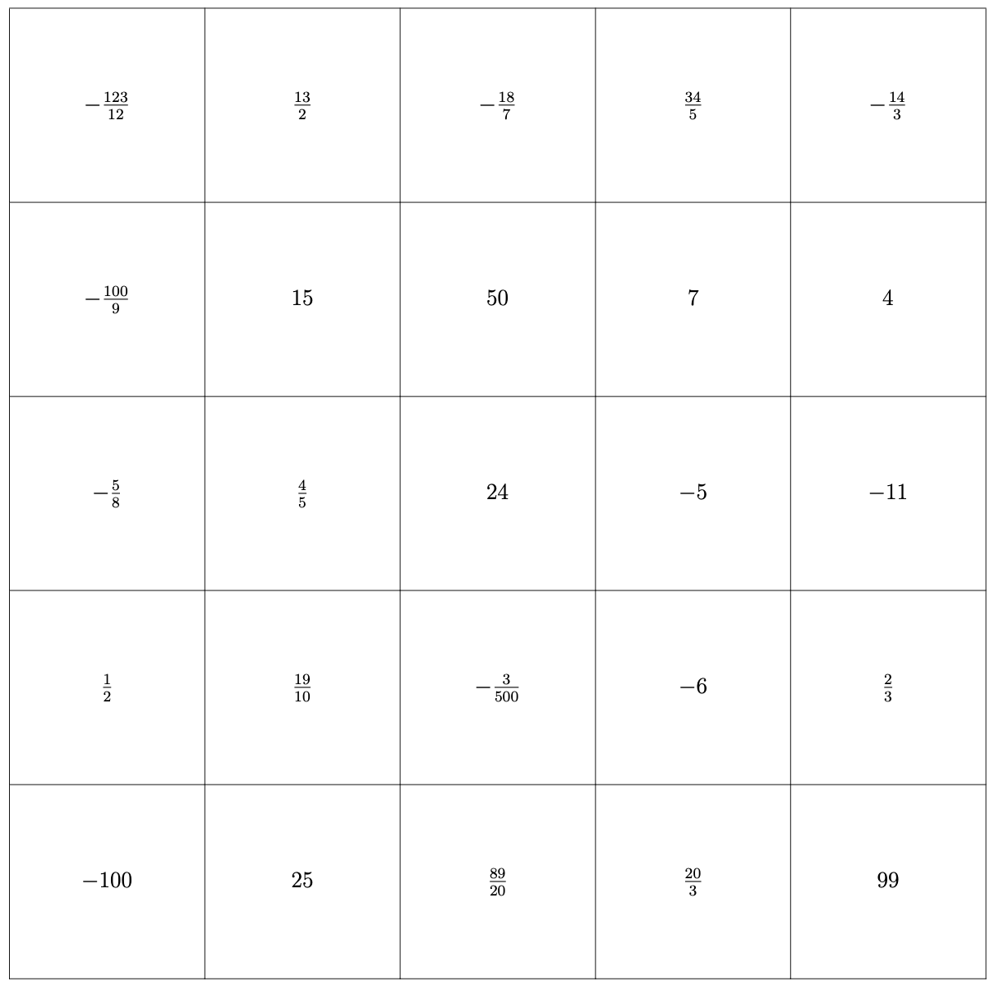

The following are formal assessments, graded and used for data tracking to determine student comprehension and progress. My formal assessments give strong quantitative data, making them effective for objective measurement. My most common types of formal assessment are worksheets, exit tickets, and exams. Worksheets make effective independent practice, while exit tickets are a strong class closer. Exams are used for summative grades, and are very good for determining what topics need to be remediated.



The following are informal tools used to assess student learning and make lesson adjustments on the fly. These activities are designed less for quantitative tracking and more for qualitative tracking. Student behaviors and questions, when taken in aggregate, indicate class comprehension. These activities are designed for the purpose of scaffolding student understanding and pushing student engagement. The Card Shuffle activity effectively scaffolds a difficult process, while the Bingo activity engages students in a competitive and productive environment.

